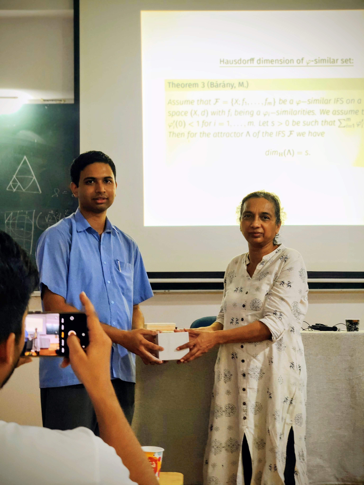

Research Overview
The primary focus of my mathematical research has been to provide a unified approach to the study of Iterated Function Systems (IFSs) defined by weaker contractive mappings[cite: 78]. By relaxing classical, rigid contraction constraints, my work investigates the core structural, geometric, and statistical behaviors of non-linear chaotic systems, focusing heavily on invariant measures and fractal dimensions[cite: 79, 80].
- Generalized Contractions: Established the Hutchinson-Barnsley theory, coding map continuities, and unique invariant measures for broad mapping families [cite: 82], including countable cyclic $\phi$-contractions [cite: 48, 58], local radial contractions (LRCs) [cite: 99, 100], and $F$-contractions[cite: 111, 116].
- Elton's Ergodic Theorem & Banach Limits: Formulated the framework of ergodicity-inducing IFSs to derive sufficient conditions under which Elton's Ergodic Theorem holds [cite: 122, 127], using properties of Banach limits to reconcile discrepancies in existing literature[cite: 52, 120, 121].
- Dimension Formulae for $\phi$-Similar Systems: Resolved constraints in the dimension theory of generalized self-similarity by proving the Hausdorff dimension formula ($dim_H(\Lambda) = s$) under the Strong Separation Property (SSP) [cite: 146] without assuming the exact Hausdorff measure is positive and finite[cite: 143, 144].
- Operator Dynamics: Evaluated the Ruelle operator theorem under systems with variable weight functions [cite: 63, 133], confirming uniform convergence properties of normalized transfer operators[cite: 138].
Publications & Preprints
Journal Articles
Exploring Iterative Dynamics, Invariant Measures, and Ergodicity in F-Contractive Iterated Function Systems
https://doi.org/10.1007/s12346-025-01345-4A note on the Banach limit-based proof of Elton's ergodic theorem for iterated function systems
https://doi.org/10.1016/j.topol.2025.109519The point-fibred property of an iterated function system with local radial contractions and its consequences
The Hutchinson-Barnsley Theory for Iterated Function System with Bounded Cyclic Contractions
On the code space and Hutchinson measure for countable iterated function system consisting of cyclic $\phi$-contractions
Articles Communicated
1. Elton's Ergodic Theorem Revisited: Extension to Iterated Function Systems with Local Radial Contractions
2. Ergodicity-Inducing Iterated Function Systems: A Unified Approach to Elton's Ergodic Theorem for Various IFSs
3. Ruelle operator theorem for F-contractive IFSs
Preprints
Dimension study of $\mu$-similar sets and measures

Presenting structural findings on the Hausdorff dimension ($dim_H(\Lambda) = s$) of $\phi$-similar sets[cite: 146, 147].
Conferences & Workshops
- Presented "Dimension estimates of $\mu$-similar sets and measures" at On Geometric Complexity of Julia Sets VI, Będlewo, Poland[cite: 68].
- Presented "Iterated Function Systems with Local Radial Contractions" at Geometry of Deterministic and Random Fractals II, Budapest, Hungary[cite: 69].
- Presented "Ergodic Theorem for Iterated Function System with Local Radial Contractions" at Geometry and Fractals under the Midnight Sun, University of Oulu, Finland[cite: 70].
- Attended GIAN course on Fractal Geometric Measure Theory and Applications, IIT Madras, India[cite: 71].
- Presented "A rudimentary exploration towards reproducing kernel Hilbert space of multivariate fractal functions" at ICSAT-2023, CUSAT, Kerala, India[cite: 72].